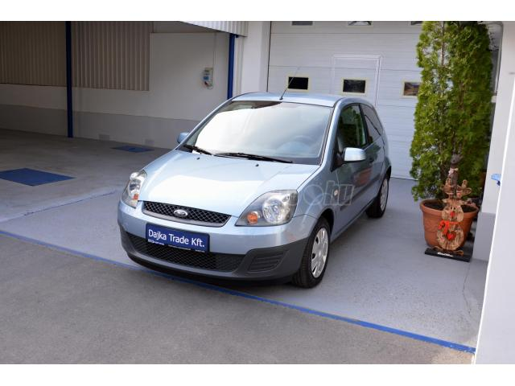

Volkswagen golf vii 1.6 tdi comfortline dsg dsg
Klíma
Dízel, 2014/09, 105Le 241 000 km
2 éves korában, Németországból saját részre behozott, gyönyörű állapotban lévő, gyöngyházfehér VW Golf tulajdonostól eladó. Az autóban Blue 16 riasztó van beszerelve. A vételár tartalmaz továbbá 16-os gyári alufelniket újszerű téligumikkal. A autóban 10 ezer km-ként volt olajcsere. Utolsó szervíz 240 ezer km-nél
1 400 000 Ft
Suzuki Swift 1.0
Centrálzár
Benzin, 1997/06, 65LE, 239 3011 km
Ez a kompakt jármű kiváló választás mindennapi városi közlekedésre vagy hosszabb utakra. A Swift gazdaságos üzemeltetést kínál, és megbízható teljesítményt nyújt. A jármű jó állapotban van, szép külső és belső kialakítással rendelkezik. Ha egy kényelmes, stílusos és megbízható autót keresel, amely készen áll az új kalandokra, akkor ez a Suzuki Swift a neked való választás lehet!
350 000 Ft
NISSAN MICRA 1.0 Visia AC Menta Mindt az uj klimás !!!
Első kerék mgh.
Benzin, 2005/10, 65LE, 171 000 km
Mind az uj hibátlan valos km szép szín csodálatos belsö műszakilag is mind az uj gumik is autobeszámitás is vasárnap is megtekitnthetö
1 100 000 Ft
RENAULT LAGUNA 1.8 Dynamique alkalmi áron
Centrálzár
Benzin, 2003/10, 88LE, 239 040 km
jó műszaki állapot klíma ell ablak apukerék jó gumik szép állapot alkalmi áron eladó!
1 000 000 Ft
FORD FIESTA 1.4 Comfort 111.890 Km!! Gyári állapot!!
Gyári állapot
Benzin, 2006/02, 65LE, 400 301 km

1 tulajdonos, szervizkönyv! alv. sz: WF0DXXGAJD6T78154, MEGTEKINTÉS ELŐRE EGYEZTETETT IDŐPONTBAN. Ugyanitt: Volvo-k készpénzes felvásárlása, bizományos értékesítése. TEKINTSE MEG KÍNÁLATUNKAT! (JÁRMŰVEK UGYANITT) M. PONTBAN!
400 000 Ft
KAWASAKI Z 900 RS
948 cm³
Benzin, 1980/07, 111LE, 240 123 km
Kawasaki Z900 RS 56 éves tulajdonostól, áron alul eladó. A motor hibátlan, garanciális, vezetett szervizkönyvvel rendelkezik, kategória váltás miatt kerül eladásra. Felszerelés Puig plexi, Legend Gear oldaltáskák, hűtővédő.
4 357 000 Ft
SEAT LEON 1.2 TSI Reference
Megkímélt
Benzin, 1998/06, 88LE, 239 789 km
MAGYARORSZÁGI, RENDSZERESEN KARBANTARTOTT, JÓ MŰSZAKI ÉS ESZTÉTIKAI ÁLLAPOTBAN ELADÓ. BESZÁMÍTÁS-LÍZING MEGOLDHATÓ. AZ AUTÓ MEGTEKINTÉSE ELŐTT TELEFONOS EGYEZTETÉS SZÜKSÉGES. HÉTKÖZNAP 8-17, SZOMBATON 9-12 KÖZÖTT VAGYUNK NYITVA.
700 000 Ft
TOYOTA AURIS Touring Sports 1.33 Live
Centrálzár
Benzin, 1997/8, 78LE, 23 900 km
Magánszemélytől(második tulajdonostól) eladóvá vált, Toyota Auris Touring 1.33 típusú autó. Rendkívül megbízható, dinamikus és alacsony fogyasztással rendelkező motorral. Ahogyan a képeken is látszik megkímélt, kitűnő állapotban. Leinformálható valós kilométeróra állás, igény esetén friss műszaki vizsgával. A hibátlan motor, váltó és a koppanásmentes futómű miatt nagyon jó menettulajdonsággal rendelkezik. Abszolút költségmentes állapotban, frissen le szervizelt(szűrőkkel, ózonos klíma tisztítással). Megtekinthető a hét bármely napján előre egyeztetett időpontban. Érvényes magyar okmányokkal, azonnal elvihető. További felmerülő kérdésekkel kapcsoltban a megadott telefonszámon állok rendelkezésére.
800 000 Ft
MERCEDES-BENZ 811D
Kék
Benzin, 2000/04, 120LE, 300 000 km
Eladó Mercedes benz 811D lejárt műszakival amin bármikor át megy. Azért nem lett le muszakiztatva mert nem használjuk. Tuzepen volt használatába többnyire ömlesztett anyagokra. Ez a típusú autó meg dolgozik és nem gondolkodik. További info 06303787284
6 700 000 Ft
PEUGEOT 2008 1.2 PureTech Access
Benzin
Benzin, 2012/04, 127LE, 170 000 km
Eladóvá vált szeretett autónk, egy Peugeot 2008. Kiváló állapotban van, rengeteg extrával, 195000 kilóméterrel. 193453-nál vezérlés lett cserélve, legutóbbi olajcsare: 191312. Egy garanciális javtás: féltengely csere + katalizátor csere szintén nem olyan rég. Igazolt motor csere Peugeot szalon által 156 ezer kilóméternél. Az autó napi használatban van. Téli-Nyári gumiszett jár hozzá + egy új szőnyegszett is. További információ telefonon.
4 800 000 Ft
VOLVO XC60 2.0 [B5] MHEV Inscription AWD Geartronic
Klíma
Benzin, 2000/07, 145LE, 170 000 km
Eladóvá vált szeretett autónk, egy Peugeot 2008. Kiváló állapotban van, rengeteg extrával, 195000 kilóméterrel. 193453-nál vezérlés lett cserélve, legutóbbi olajcsare: 191312. Egy garanciális javtás: féltengely csere + katalizátor csere szintén nem olyan rég. Igazolt motor csere Peugeot szalon által 156 ezer kilóméternél. Az autó napi használatban van. Téli-Nyári gumiszett jár hozzá + egy új szőnyegszett is. További információ telefonon.
4 800 000 Ft
BMW M4 Competition DKG ÁFÁS LED HK Fehérbőr Memória
Szervó k.
Dízel, 2012/04, 127LE, 1 000 km
Adaptív LED fényszóró, M Competition Paket, Austin sárgametál fényezés, Open Air Paket, világos fehérbőr belső, fűthető első ülések, kormányváltó, tolatókamera, Harman Kardon hifi, távolságartó tempomat, Speed Limit Info, memóriás és elektromos ülésállítás, bőr multikormány. CSERE-BESZÁMÍTÁS LEHETSÉGES! - A nálunk vásárolt autók szervizelését és alkatrész ellátását is kedvezményes áron vállaljuk! 24 órás akciónk keretein belül friss autóink kedvezményes áron vásárolhatóak meg. További információk weboldalunkon! Címünk: 1039 Budapest, Szent István utca 17.
10 400 000 Ft